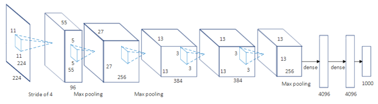
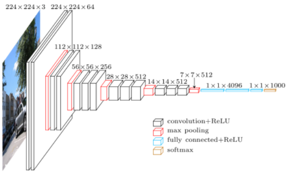
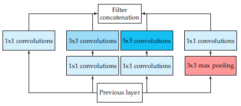
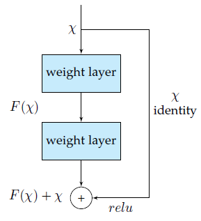
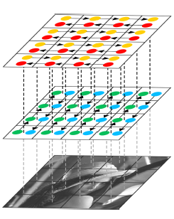

翻译：应用于语义分割问题的深度学习技术综述
|
原文：A Review on Deep Learning Techniques Applied to Semantic Segmentation
摘要 计算机视觉与机器学习研究者对图像语义分割问题越来越感兴趣。越来越多的应用场景需要精确且高效的分割技术，如自动驾驶、室内导航、甚至虚拟现实与增强现实等。这个需求与视觉相关的各个领域及应用场景下的深度学习技术的发展相符合，包括语义分割及场景理解等。这篇论文回顾了各种应用场景下利用深度学习技术解决语义分割问题的情况：首先，我们引入了领域相关的术语及必要的背景知识；然后，我们介绍了主要的数据集以及对应的挑战，帮助研究者选取真正适合他们问题需要及目标的数据集；接下来，我们介绍了现有的方法，突出了各自的贡献以及对本领域的积极影响；最后，我们展示了大量的针对所述方法及数据集的实验结果，同时对其进行了分析；我们还指出了一系列的未来工作的发展方向，并给出了我们对于目前最优的应用深度学习技术解决语义分割问题的研究结论。 |
||||||
|
1 导言 如今，语义分割（应用于静态2D图像、视频甚至3D数据、体数据）是计算机视觉的关键问题之一。在宏观意义上来说，语义分割是为场景理解铺平了道路的一种高层任务。作为计算机视觉的核心问题，场景理解的重要性越来越突出，因为现实中越来越多的应用场景需要从影像中推理出相关的知识或语义（即由具体到抽象的过程）。这些应用包括自动驾驶[1,2,3]，人机交互[4]，计算摄影学[5]，图像搜索引擎[6]，增强现实等。应用各种传统的计算机视觉和机器学习技术，这些问题已经得到了解决。虽然这些方法很流行，但深度学习革命让相关领域发生了翻天覆地的变化，因此，包括语义分割在内的许多计算机视觉问题都开始使用深度架构来解决，通常是卷积神经网络CNN[7-11]，而CNN在准确率甚至效率上都远远超过了传统方法。然而，相比于固有的计算机视觉及机器学习分支，深度学习还远不成熟。也因此，还没有一个统一的工作及对于目前最优方法的综述。该领域的飞速发展使得对初学者的启蒙教育比较困难，而且，由于大量的工作相继被提出，要跟上发展的步伐也非常耗时。于是，追随语义分割相关工作、合理地解释它们的论点、过滤掉低水平的工作以及验证相关实验结果等是非常困难的。 就我所知，本文是第一篇致力于综述用于语义分割的深度模型技术的文章。已经有较多的关于语义分割的综述调查，比如[12,13]等，这些工作在总结、分类现有方法、讨论数据集及评价指标以及为未来研究者提供设计思路等方面做了很好的工作。但是，这些文章缺少对某些最新数据集的介绍，他们不去分析框架的情况，而且没有提供深度学习技术的细节。因此，我们认为本文是全新的工作，而且这对于深度学习相关的语义分割社区有着重要意义。 
本文核心贡献如下： 本文剩余部分安排： |
||||||
|
2 术语及背景概念 为了更好地理解语义分割问题是如何用深度学习框架解决的，有必要了解到其实基于深度学习的语义分割并不是一个孤立的领域，而是在从粗糙推理到精细化推理过程中很自然的一步。这可以追溯到分类问题，包括对整个输入做出预测，即预测哪个物体是属于这幅图像的，或者给出多个物体可能性的排序。对于细粒度推理来说，将接下来进行物体的定位与检测，这将不止提供物体的类别，而且提供关于各类别空间位置的额外信息，比如中心点或者边框。这样很显然，语义分割是实现细粒度推理的很自然的一步，它的目标是：对每个像素点进行密集的预测，这样每个像素点均被标注上期对应物体或区域的类别。这还可以进一步改进，比如实例分割（即对同一类的不同实例标以不同的标签），甚至是基于部分的分割（即对已经分出不同类别的图像进行底层分解，找到每个类对应的组成成分）。图1展示了以上提到的演变过程。在本文中，我们主要关注一般的场景标注，也就是像素级别的分割，但是我们也会回顾实例分割及基于部分的分割的较重要的方法。 最后，像素级别的标注问题可以松弛为以下公式：对于随机变量集合 中的每个随机变量，找到一种方法为其指派一个来自标签空间 中的一个状态。每个标签 表示唯一的一个类或者物体，比如飞机、汽车、交通标志或背景等。这个标签空间有 个可能的状态，通常会被扩展为 +1个，即视 为背景或者空的类。通常， 是一个二维的图像，包含W*H=N的像素点x。但是，这个随机变量的集合可以被扩展到任意维度，比如体数据或者超谱图像。 除了问题的定义，回顾一些可能帮助读者理解的背景概念也是必要的。首先是一些常见的被用作深度语义分割系统的网络、方法以及设计决策；另外还有用于训练的一些常见的技术比如迁移学习等。最后是数据的预处理以及增强式的方法等。 |
||||||
|
2.1 常见的深度网络架构 正如之前所讲，某些深度网络已经对该领域产生了巨大的贡献，并已成为众所周知的领域标准。这些方法包括AlexNet，VGG-16，GoogLeNet，以及ResNet。还有一些是由于其被用作许多分割架构的一部分而显得重要。因此，本文将在本章致力于对其进行回顾。 2.1.1 AlexNet AlexNet（以作者名字Alex命名）首创了深度卷积神经网络模型，在2012年ILSVRC（ImageNet大规模图像识别）竞赛上以top-5准确率84.6%的成绩获胜，而与之最接近的竞争者使用了传统的而非深度的模型技术，在相同的问题下仅取得了73.8%的准确率。由Krizhecsky等人[14]给出的架构相对简单，包括卷积层、max-pooling层及ReLU层各五层作为非线性层，全连接层三层以及dropout层。图2给出了这个架构的示意。

2.1.2 VGG VGG是由牛津大学Visual Geometry Group提出的卷积神经网络模型（以课题组的名字命名）。他们提出了深度卷积神经网络的多种模型及配置[15]，其中一种提交到了2013年ILSVRC（ImageNet大规模图像识别）竞赛上。这个模型由于由16个权重层组成，因此也被称为VGG-16，其在该竞赛中取得了top-5上92.7%的准确率。图3展示了VGG-16的模型配置。VGG-16与之前的模型的主要的不同之处在于，其在第一层使用了一堆小感受野的卷积层，而不是少数的大感受野的卷积层。这使得模型的参数更少，非线性性更强，也因此使得决策函数更具区分度，模型更好训练。

2.1.3 GoogLeNet GoogLeNet是由Szegedy等人[16]提出的在ILSVRC-2014竞赛上取得top-5上93.3%准确率的模型。这个CNN模型以其复杂程度著称，事实上，其具有22个层以及新引入的inception模块（如图4所示）。这种新的方法证实了CNN层可以有更多的堆叠方式，而不仅仅是标准的序列方式。实际上，这些模块由一个网络内部的网络层（NiN）、一个池化操作、一个大卷积核的卷积层及一个小核的卷积层组成。所有操作均并行计算出来，而后进行1×1卷积操作来进行降维。由于这些模块的作用，参数及操作的数量大大减少，网络在存储空间占用及耗时等方面均取得了进步。

2.1.4 ResNet 微软提出的ResNet[17]由于在ILSVRC-2016中取得的96.4%的准确率而广受关注。除了准确率较高之外，ResNet网络还以其高达152层的深度以及对残差模块的引入而闻名。残差模块解决了训练真正深层网络时存在的问题，通过引入identity skip connections网络各层可以把其输入复制到后面的层上。本方法的关键想法便是，保证下一层可以从输入中学到与已经学到的信息不同的新东西（因为下一层同时得到了前一层的输出以及原始的输入）。另外，这种连接也协助解决了梯度消失的问题。

2.1.5 ReNet 为了将循环神经网络RNN模型扩展到多维度的任务上，Graves等人[18]提出了一种多维度循环神经网络（MDRNN）模型，将每个单一的循环连接替换为带有d个连接的标准RNN，其中d是数据的spatio-temporal维度。基于这篇工作，Visin等人[19]提出了ReNet模型，其不使用多维RNN模型，而是使用常见的序列RNN模型。这样，RNN模型的数量在每一层关于d（输入图像的维数2d）线性增长。在ReNet中，每个卷积层（卷积+池化）被4个同时在水平方向与竖直方向切分图像的RNN模型所替代，如图6所示：

|
||||||
|
2.2 迁移学习 从头训练一个深度神经网络通常是不可行的，有这样两个原因：训练需要足量的数据集，而这一般是很难得到的；网络达到收敛需要很长的时间。即便得到了足够大的数据集并且网络可以在短时间内达到收敛，从之前的训练结果中的权重开始训练也总比从随机初始化的权重开始训练要好[20,21]。迁移学习的一种重要的做法便是从之前训练好的网络开始继续训练过程来微调模型的权重值。 Yosinski等人[22]证明了即便是从较不相关的任务中迁移学习来的特征也要比直接从随机初始化学习的特征要好，这个结论也考虑到了随着提前训练的任务与目标任务之间差异的增大，可迁移性将减小的情况。 然而，迁移学习技术的应用并没有如此的直接。一方面，使用提前训练的网络必须满足网络架构等的约束，不过，因为一般不会新提出一个全新的网络结构来使用，所以使用现有的网络架构或网络组件进行迁移学习是常见的；另一方面，迁移学习中的训练过程本身相对于从头开始的训练过程来说区别非常小。合理选择进行微调的层是很重要的，一般选网络中较高的层因为底层一般倾向于保留更加通用的特征；同时，合理地确定学习率也是重要的，一般选取较小的值，因为一般认为提前训练的权重相对比较好，无需过度修改。 由于收集和创建像素级别的分割标注数据集的内在的困难性，这些数据集的规模一般不如分类数据集如ImageNet[23,24]等的大。分割研究中数据集的规模问题在处理RGB-D或3D数据集时更加严重，因为这些数据集规模更小。也因此，迁移学习，尤其是从提前训练好的分类网络中微调而来的方式，将会成为分割领域的大势所趋，并且已经有方法成功地进行了应用，我们将在后面几章进行回顾。 |
||||||